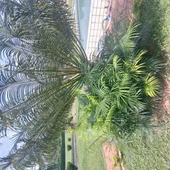

<!Doctype htlm>
<html lang="fr">
<head>
    <meta charset="Utf-8" />
    <meta name="viewport" content="width=device-width, initial-scale=1.0">
        <title> conifères </title>
        <link rel="stylesheet" href="css/style.css">
</html>
<body>
    <header>
        
       <nav>
        <a href="../accueil/accueil.html">Acceuil</a>
        <a href="../histoires/Histoire.htlm">Histoire</a>
        <a href="conifères.html" id="fougère"
        style="color:white";>Les Groupes</a>
       </nav>
        </header>

       <h1 style="color:white;font-size: 50px;"> Les conifères </h1>
       <h2 style="color: white;font-size: 50px;">Un groupe végétal qui vit sur la terre ferme (souvent en forêt ou en montagne),<br>
        et qui possède de vraies racines, un tronc (tige), des feuilles en aiguilles et des cônes.</h2>
    
    <div>
        <div class="imageg">
        
        </div>
        <div class="imaged">
            
        </div>
        <h3> Le conifère fabrique des graines dans ses cônes grâce au pollen. <br>
         Le cône s'ouvre et laisse tomber les graines au sol.<br>
        Chaque graine pousse pour devenir un nouvel arbre.</h3>
         <div class ="gauche">
            <a href="../Fougères/Fougères.html">
                
            </a>
         </div>  
         
         <div class ="droite">
            <a href="../Graminés/Graminées.html">
                
            </a>
         </div>
       
    </div>

</body> 